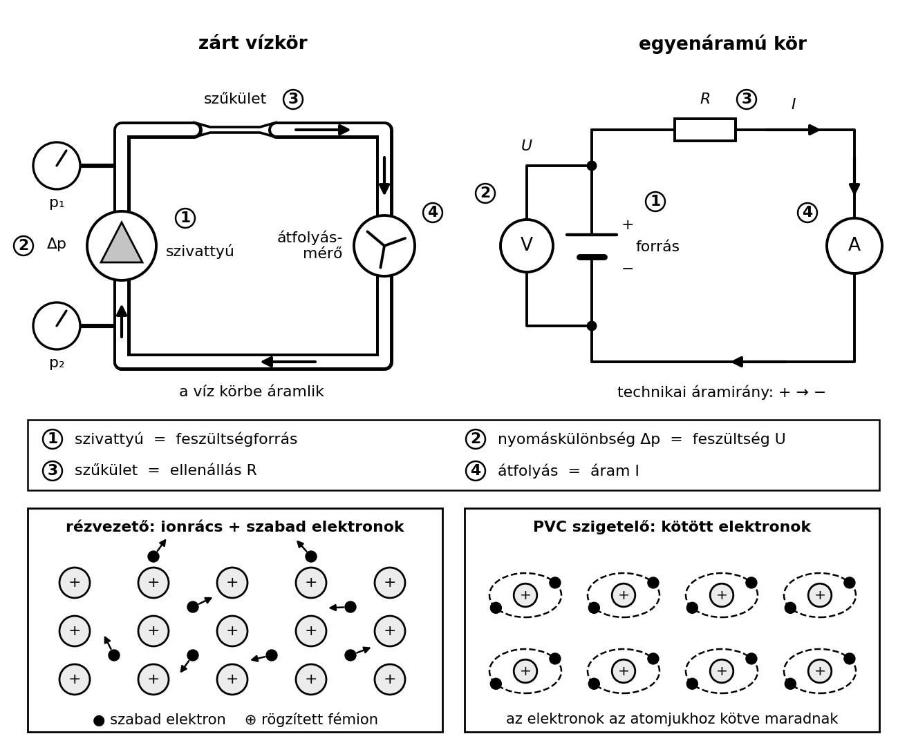
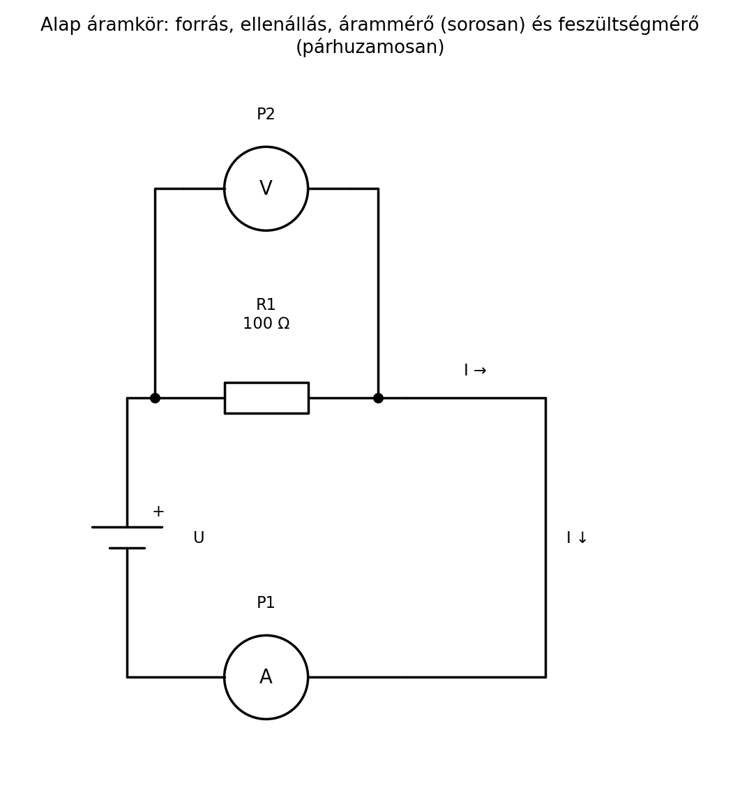
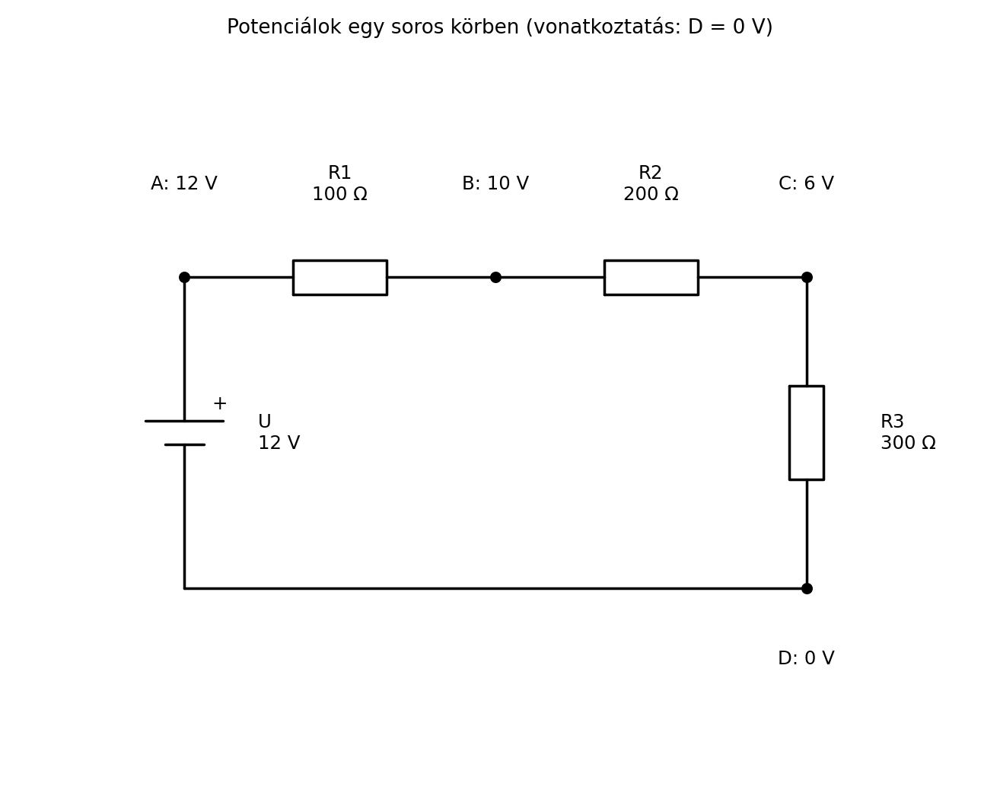
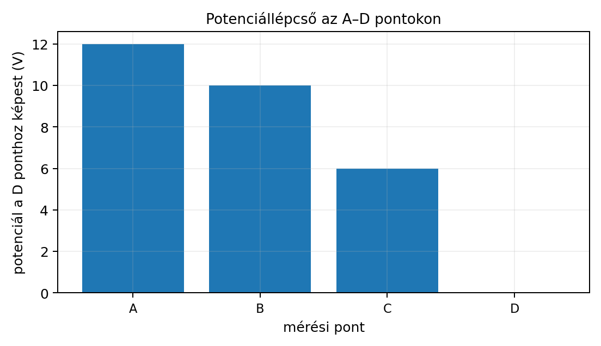

Képzeld el, hogy egy régi lakásban készülsz kicserélni egy kapcsolót. A kezedben van a kétpólusú feszültségvizsgáló, a szigetelt csavarhúzó, és a kapcsoló mögött ott van néhány színes vezeték. A munka akkor lesz biztonságos és értelmes, ha pontosan tudod, hogy mi „van” a vezetékekben; miért ráz meg a feszültség; miért melegszik a vékony vezeték; és miért nem enged áramot a szigetelő csavarhúzó nyele. Ezt a tudást nem lehet elválasztani az anyag legkisebb építőköveitől, az atomoktól. A villanyszerelő napi munkája során nem az atomot nézi, de a feszültség, áram és ellenállás fogalma minden egyes mérésnél, bekötésnél és hibakeresésnél az atomi töltésekre vezethető vissza. Ha ezt az alapot jól megérted, a későbbi kapcsolások, védelmek és gépek már csak ennek az egyszerű képnek a kiterjesztései lesznek.
A másik ok, amiért ezzel a fejezettel kezdünk: a villamosipar
jelölésrendszere, méréstechnikája és hibavédelme mind feltételezi, hogy
a szerelő meg tudja különböztetni a feszültséget, az áramot és az
ellenállást. Akkor fogsz jól mérni multiméterrel, ha nem kevered a
V és az A állást; akkor fogsz jó vezetéket
választani, ha érted, miért növeli a vékony, hosszú, rossz anyagú vezető
az ellenállást. Így ez a fejezet nem csak elméleti érdekesség, hanem a
szakmai nyelv és a napi mérések alapkő-lefektetése.
Egy atomot leggyakrabban úgy képzelünk el, mint egy parányi naprendszert: a középpontjában van a protonokból álló atommag, körülötte pedig elektronok mozognak. A protonok pozitív, az elektronok negatív töltésűek. Az atommagban lévő neutronok elektromosan semlegesek. Az anyagot a protonok és az elektronok közötti vonzó kölcsönhatás tartja össze, ugyanakkor bizonyos anyagokban a legkülső elektronok viszonylag könnyen elszakadhatnak eredeti atomjuktól. Ez a többlet- vagy hiánytöltés a villamos jelenségek alapja.
A feszültség–áram–ellenállás hármast legkönnyebb egy vízvezeték-rendszerrel szemléltetni, bár a hasonlat nem tökéletes, és a későbbi számításoknál mindig a pontos fizikai definíciókhoz kell visszatérni. A feszültség olyan, mint a cső két vége közötti nyomáskülönbség: ha nincs nyomáskülönbség, nem folyik víz; ha nincs feszültség, nem folyik áram. Az áram olyan, mint a víz áramlási sebessége, pontosabban a cső keresztmetszetén időegység alatt átáramló vízmennyiség. Az ellenállás pedig a cső szűkülete, belső súrlódása, amely akadályozza az áramlást: adott nyomáskülönbség mellett a szűkebb, hosszabb csövön kevesebb víz fér át. Ennek az analógiának a segítségével az áramkört is könnyen átlátod: a feszültségforrás a nyomást, az ellenállás a fogyasztót, a vezeték pedig a csövet jelenti.
Az alábbi ábra a két kört egymás mellé teszi. Az azonos számú elemek egymásnak felelnek meg: a szivattyú (1) a feszültségforrás, a szivattyú két oldalán mért nyomás különbsége (2) a feszültség – ezt méri a forrással párhuzamosan kötött feszültségmérő –, a szűkület (3) az ellenállás, az átfolyásmérő (4) pedig az árammérő, amely a körbe sorosan beiktatva a teljes átáramló mennyiséget „látja”. Az alsó sáv azt mutatja, miért vezet a réz és miért nem a PVC: a fémrácsban a legkülső elektronok szabadon mozognak az ionok között, a szigetelőben az elektronok az atomjukhoz kötve maradnak.

Keresd meg az ábrán, hol „esik” a nyomás a vízkörben, és hol a feszültség az áramkörben! Mindkettő a szűkületen, illetve az ellenálláson. Az analógia határa: egy nyitott csővégből a víz kifolyik, az áram viszont nyitott körben egyáltalán nem folyik – a vezetékből nem „folyik ki” semmi, a szakadás egyszerűen megszünteti az áramot. Az áramhoz tehát mindig zárt kör kell; a hasonlat csak a mennyiségek kapcsolatának megértésére jó, a számoláshoz a fizikai definíciók kellenek.
Az alábbi ábra azt a legegyszerűbb, tanulási célú áramkört mutatja, amelyet élesben csak feszültségmentesítés és a tanműhelyi, törpefeszültségű gyakorlatok szabályai szerint szabad használni. A rajzon a feszültségforrás, egy ellenállás, a vele sorba kötött árammérő és a vele párhuzamosan kötött feszültségmérő látható.

A rajz értelmezése: a feszültségforrás (U) nyomáskülönbséget hoz létre, az azonos vezetőszálon az ellenállás (R1) az áramot korlátozza, az ampermérő (P1, a körben „A” jellel) pedig ugyanabba az áramkörbe van sorosan beiktatva, ezért azt az áramot méri, amely a körben folyik. A feszültségmérő (P2, „V” jellel) ezzel szemben nem a körbe van beiktatva, hanem a két kivezetése az R1 két kapcsához csatlakozik (a két csatlakozási pont jelöli az elágazást): így az R1 két vége közötti feszültséget méri, és az áramkör működésén – nagy belső ellenállása miatt – gyakorlatilag nem változtat. Ha a P2-t kivennéd, a kör tovább működne; ha a P1-et vennéd ki, a kör megszakadna. A technikai áramirányt a forrás pozitív sarkától a negatív sarkig rajzoljuk, függetlenül attól, hogy a valóságban az elektronok negatívból pozitív felé mozognak.
Definíció. Elektromos töltés az anyag azon alapvető tulajdonsága, amely miatt a részecskék az elektromos térben erőhatást gyakorolnak egymásra. Jele , SI-mértékegysége a coulomb, jele . A legkisebb, szabadon előforduló negatív töltés az elektron töltése, amelyet elemi töltésnek nevezünk:
A proton töltése ugyanekkora nagyságú, de pozitív. A semleges atomban annyi proton van, mint elektron, ezért a külső töltése nulla. Ha egy atomból elektront távolítunk el, pozitív ion, ha elektront adunk hozzá, negatív ion keletkezik.
Az elektrosztatikus jelenségek akkor lépnek fel, amikor töltések halmozódnak fel egy anyagon, például dörzsölés hatására. A műanyag fésű megdörzsölve papírdarabkákat vonz, a szőnyegen járva pedig feltöltődhet a testünk, és egy kilincs megérintésekor apró szikra ugrik. A szerelőnek ezért különösen fontos tudnia, hogy a feltöltődés érzékeny elektronikai alkatrészeket is tönkretehet, és egyes üzemekben az ilyen kisüléseket külön védelmi intézkedésekkel kell megelőzni.
Az anyagokat a villamosiparban aszerint csoportosítjuk, hogy milyen könnyen engedik elmozdulni a töltéshordozókat.
Definíció. Vezető az az anyag, amelyben a töltéshordozók szabadon, viszonylag csekély akadállyal el tudnak mozdulni. Szigetelő az az anyag, amelyben a töltéshordozók gyakorlatilag nem tudnak szabadon elmozdulni. Félvezető az az anyag, amelynek vezetőképessége a vezető és a szigetelő közé esik, és ezt a vezetőképességet adalékolással, hőmérséklettel, fénnyel vagy elektromos térrel jelentősen befolyásolni lehet.
A villanyszerelő napi gyakorlatában a legfontosabb vezetők a fémek, elsősorban a réz és az alumínium. A fémekben az atomok legkülső elektronjai úgynevezett delokalizált elektronfelhőt alkotnak, amelyben az elektronok már nem egyetlen atomhoz tartoznak, hanem az egész anyagban elmozdulhatnak. A szigetelőkben, például a PVC-ben, a gumiban, az üvegben, a kerámiában és a száraz levegőben, az elektronok erősen kötöttek, ezért nem lép fel jelentős áramvezetés. A félvezetők közé tartozik a szilícium és a germánium; ezeket a későbbi elektronikai fejezetekben használjuk majd diódákhoz, tranzisztorokhoz és fényelemekhez.
A tartós villamos áram létrehozásához olyan berendezésre van szükség, amely folyamatosan töltéseket választ szét, és így potenciálkülönbséget tart fenn. A fontosabb feszültségforrások:
A villanyszerelő számára a feszültségforrások két nagy csoportja fontos: a hálózati váltakozó feszültség és a törpefeszültségű egyen- vagy váltakozó forrás, például akkumulátor vagy leválasztó transzformátor. Az Otthoni tanulólabor és szerszámkészlet biztonságosan alfejezetben már olvashattad a biztonságos tanulólabor kialakítását, itt pedig az a lényeg, hogy a feszültségforrás mindig valamilyen energiabefektetéssel hozza létre a töltésszétválasztást.
Definíció. Feszültség két pont között a potenciálkülönbség, amely megmutatja, mekkora munkát végez a villamos tér, miközben egységnyi (1 C) töltést az egyik pontból a másikba mozgat. Jele , SI-mértékegysége a volt, jele . Képlete:
ahol a villamos munka joule-ban (), pedig a mozgatott töltés coulombban (). A feszültség tehát nem „folyik”, hanem két pont közötti állapotkülönbség.
A feszültség mindig két pont között értelmezhető. A kapcsolási rajzokon a feszültségmérőt ezért mindig párhuzamosan kötjük a mérendő két ponthoz. A gyakorlatban egy fázis és a nulla között 230 V, két fázis között 400 V a hálózati feszültség a hazai kisfeszültségű rendszerben (az értékek tájékoztató jellegűek, és a hálózati engedélyes, illetve a hatályos szabványok előírásai szerint ellenőrizendők).
Definíció. Villamos áram a töltések rendezett, irányított mozgása. Az áramerősség, röviden áram, megadja, hogy a vezető keresztmetszetén időegység alatt mekkora töltésmennyiség halad át. Jele , SI-mértékegysége az amper, jele . Képlete:
ahol coulombban, pedig másodpercben () adott. A gyakorlatban használjuk még a milliampert () és a kiloampert () is.
Megjegyzés. Milyen gyorsan haladnak maguk az elektronok? Ha a vezető egységnyi térfogatában szabad elektron van, a keresztmetszet , és az elektronok átlagos sodródási (vándorlási) sebessége , akkor
Rézben . Egy 1,5 mm² keresztmetszetű rézvezetőben 16 A esetén:
Egy méter megtételéhez egy elektronnak tehát kb. 21 perc kell. A lámpa mégis azonnal felgyullad, mert a villamos tér (a „jel”) közel fénysebességgel terjed végig a vezetéken, és az elektronok a kör minden pontján gyakorlatilag egyszerre indulnak el – ahogy a vízzel telt cső egyik végén belépő víz azonnal vizet tol ki a másik végén. Váltakozó áramnál az elektronok ráadásul nem haladnak végig a vezetéken, csak rezegnek egy helyzet körül. Kérdés: mekkora a sodródási sebesség ugyanebben a vezetőben 10 A esetén? (Válasz: kb. 0,49 mm/s, mert a sebesség az árammal arányos.)
Szabály. Technikai áramirány: a kapcsolási rajzokon és a szakmai számításokban az áram irányát a feszültségforrás pozitív sarkától a negatív sarkáig, tehát a potenciálmagasabb ponttól a potenciálalacsonyabb pont felé vesszük fel. A valóságban a fémekben az elektronok a negatív saroktól a pozitív sarok felé mozognak, ám a technikai áramirány a pozitív töltéshordozók fiktív mozgását írja le. Ennek a megállapodásnak az a jelentősége, hogy a rajzokon, a nyilak és a mérések mindig ugyanazt az irányt jelöljék; a szerelőnek tehát nem kell minden alkalommal az elektronok haladási irányát keresnie.
Definíció. Egy pont potenciálja (jele , egysége volt) a pontnak egy szabadon választott vonatkoztatási ponthoz (0 V) képest mért feszültsége. Egyenáramú körben a vonatkoztatási pont általában a forrás negatív sarka (készülékben gyakran a fémtest), hálózaton a föld, illetve a PE védővezető.
Összefüggés. Az A és a B pont közötti feszültség a két potenciál különbsége:
Az indexeinek sorrendje tehát számít: pozitív, ha az A pont magasabb potenciálú. A feszültség független a vonatkoztatási pont választásától, a potenciál nem.

| Pont | , vonatkoztatás D | , vonatkoztatás C |
|---|---|---|
| A | 12 V | 6 V |
| B | 10 V | 4 V |
| C | 6 V | 0 V |
| D | 0 V | −6 V |
A feszültségek mindkét oszlopból ugyanazok: , , , összegük 12 V; fordított sorrendben . Az alábbi potenciállépcső a D ponthoz mért potenciált mutatja a kör pontjai mentén: minden lépcső magassága egy ellenálláson eső feszültség.

Gyakorlat. A szerelő a multiméter COM (fekete) tüskéjét a vonatkoztatási ponton hagyja, a piros tüskével pedig pontról pontra halad (hálózati feszültségű körben ezt csak jogosult személy végezheti). Ahol a kijelzett potenciál ugrik, ott feszültség esik. Ha egy soros kör valahol megszakad, nem folyik áram, az ép ellenállásokon nem esik feszültség, ezért a teljes forrásfeszültség egyetlen helyen, a szakadás két oldala között „ugrik”. Az előjeleket következetesen a Kirchhoff-törvények és hálózatszámítás hurokegyenletei használják majd.
Definíció. Villamos ellenállás a vezető azon tulajdonsága, amely akadályozza a töltéshordozók áramlását. Jele , SI-mértékegysége az ohm, jele . Ha egy adott feszültség hatására a vezetőn átfolyó áramot mérünk, az ellenállás az
hányadossal adható meg. Ez a képlet a(z) Ohm törvénye, villamos munka, teljesítmény és hatásfok alfejezetben kerül majd részletes tárgyalásra, de a fogalmat már itt meg kell alapozni.
Az ellenállás mértékét az anyag minősége, a vezető hossza, keresztmetszete és hőmérséklete határozza meg; ezt a(z) Az ellenállás függése az anyagtól, mérettől és hőmérséklettől alfejezetben vizsgáljuk pontosan. A gyakorlati szerelői munkában az ellenállás egyaránt jelentheti a fogyasztó ellenállását (például izzószál, fűtőszál, motor tekercselése), a vezeték káros ellenállását, a rossz kötés átmeneti ellenállását vagy a szigetelés szivárgási ellenállását. Nem mindegy, hogy éppen hasznos vagy káros ellenállásról van szó.
Az áramnak nem látjuk közvetlenül a töltésáramlást, ezért a villanyszerelő mindig valamelyik hatásán keresztül érzékeli és méri.
Egy tipikus hibakeresési helyzetben, például egy 12 V-os tanműhelyi kapcsolásban a szerelő azt tapasztalja, hogy a lámpa nem világít, pedig a tápegység be van kapcsolva. Első lépésben multiméterrel feszültséget mér a tápegység kimenete között: 12,3 V-ot kap. Ezután a lámpa kapcsai közé mér, ott már csak 0 V-ot. A hiányzó feszültség arra utal, hogy a vezető valahol megszakadt, vagy egy sorkapocs meglazult. Ezt ellenállásméréssel tudja megerősíteni: feszültségmentesítés után a sorkapcsokon a vártnál sokkal nagyobb, gyakorlatilag végtelen ellenállást mér. Itt egyszerre jelenik meg mindhárom fogalom: a feszültség mint potenciálkülönbség, az áram mint a töltésáramlás, és az ellenállás mint a vezetőben és a csatlakozásokban lévő akadály.
A gyakorlati helyszíni munkában a szerelő a mérési kategóriáknak megfelelő minőségű műszert választ; ezt részletesen a(z) Mérés alapjai, mérési hibák és műszerosztályok alfejezet tárgyalja. Itt annyit kell rögzíteni: a feszültséget mindig párhuzamosan, az áramot mindig sorosan mérjük, az ellenállást pedig csak feszültségmentesített, kisütött áramkörben.
Biztonsági korlát. Ezt a módszert bekapcsolt körben itt kizárólag tanműhelyi törpefeszültségen (például 12 V-os, áramkorlátos tápegységről) gyakorolhatod; hálózati feszültségű körben feszültség alatti hibakeresést csak jogosult személy végezhet.
Szabály. Egy soros körben a feszültség helye és értéke elárulja a hibát:
| Tünet | Mért értékek | Valószínű ok | Következő lépés |
|---|---|---|---|
| Nem világít | fogyasztón 0 V, egy elemen a teljes | szakadás az adott elemnél | lekapcsolás, az elem ellenállásmérése |
| Nem világít, a kapcsoló „be” | kapcsolón a teljes | az érintkező nem zár | kapcsoló vizsgálata, cseréje |
| Halványan világít | fogyasztón kevesebb, egy kötésen több volt | átmeneti ellenállás | lekapcsolás, kötés tisztítása, meghúzása |
| Sötét, a táp áramkorlátoz | forrás és fogyasztó közel 0 V | rövidzár | kikapcsolás, zárlatos hely keresése |
A módszert a 7–10. feladat gyakoroltatja; a mérés pontosságát és a műszer hatását a Mérés alapjai, mérési hibák és műszerosztályok alfejezet tárgyalja.
Gyakorlás: ennek az alfejezetnek a kidolgozott példái, gyakorlatai és megoldással ellátott feladatai az Összefoglaló feladatgyűjtemény villanyszerelő tanulóknak című kötet 3.1 szakaszában találhatók.
Az anyag legkisebb, villamos szempontból meghatározó építőkövei a töltött részecskék: az elektron negatív, a proton pozitív töltésű. Az elektromos töltés SI-mértékegysége a coulomb, az elemi töltés . A feszültség két pont közötti potenciálkülönbség, jele , mértékegysége volt; , azaz egységnyi töltésre jutó munka. A villamos áram a töltések rendezett mozgása, jele , mértékegysége amper; . A technikai áramirány a pozitív saroktól a negatív sarok felé mutat, az elektronok ezzel ellentétesen mozognak. Az ellenállás a töltésáramlást akadályozó tulajdonság, jele , mértékegysége ohm; . A feszültséget mindig párhuzamosan, az áramot mindig sorosan mérjük. A vezető anyagokban szabadon mozoghatnak az elektronok, a szigetelőkben nem; a félvezetők a kettő közötti átmenetet képviselik. Ezt az alapfogalom-készletet használjuk minden további fejezetben, így a(z) Ohm törvénye, villamos munka, teljesítmény és hatásfok és a(z) Mérés alapjai, mérési hibák és műszerosztályok alfejezetben is. Hálózati feszültségű munkát önállóan ne végezz; a tanműhelyi gyakorlatokhoz az Otthoni tanulólabor és szerszámkészlet biztonságosan alfejezet biztonsági irányelvei az irányadóak.
Továbbvitt eredmény. A feszültség, áram és ellenállás itt bemutatott definícióját, képleteit és mértékegységeit használja minden további alfejezet, különösen a(z) Ohm törvénye, villamos munka, teljesítmény és hatásfok, a(z) Az ellenállás függése az anyagtól, mérettől és hőmérséklettől és a(z) Mérés alapjai, mérési hibák és műszerosztályok alfejezet. A gyakorlati méréseknél e három fogalom nélkül nem értelmezhető sem a multiméter, sem a hibakeresés.
Nem hivatkoztam konkrét, csak interneten keresztül elérhető forrásra. A fizikai alapmennyiségek és az SI-mértékegységek stabil tudást képviselnek; a hálózati feszültségértékek (230/400 V, 50 Hz) a hazai gyakorlatban használatosak, de tervezési vagy kivitelezési alapadatként a hatályos szabványban és a hálózati engedélyes előírásai szerint ellenőrizendők.